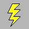

Either the "Execute Script..." option in the "Scripts" menu or the Execute Script button

launch a dialog in which the user sets up how to generate and then execute a group of scripts. See help on "Generating Script Files" for details on generation. After the generation options are set up the user can specify execution operations and then launch it by clicking the "Execute" button. Then the output of the job is shown in a new window.